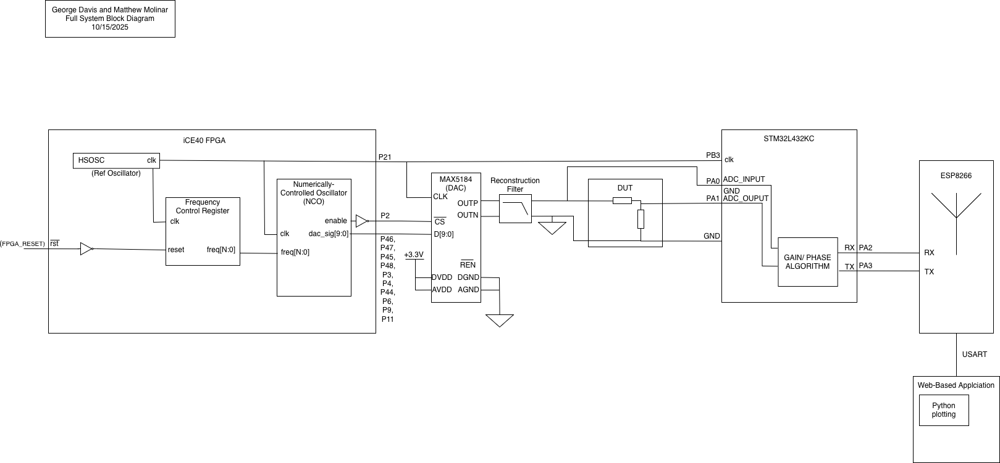
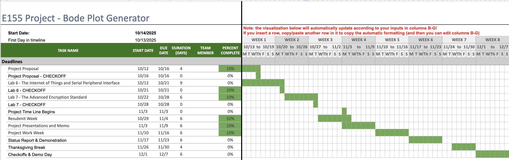

Bode Plot Generator
Project Description and Overview
This project will implement an interactive Bode plot generator, which will be capable of displaying the amplitude and phase response of a device under test (DUT) across a swept frequency range. This will be implemented using an FPGA to generate sine waves via an internal DDS, and an MCU to receive and process the signal. Then, the data is sent from the MCU to an ESP8266, which will host a webpage for plotting the Bode plot.
The riskiest element of this project that we will need to take the most care in designing is the system we have designed to synthesize the sine wave. This process implements a complex external IC that will be interfaced with by our HDL code, requiring a strong intuition of signals that we are excited to refine!
The project tasks will be divided evenly among each of the project members. There shouldn’t be any aspect of the project that one of the members didn’t contribute to. That being said, based on the block diagram and project timeline, the initial programming will be split evenly between each team member, at which point we will come together and help each other debug and bring the different modules together.
This project will enable real-time visualization of how filters and other circuits behave in the frequency domain.
Embedded Design
Field Programmable Gate Array Design Details
The iCE40 FPGA will generate a signal using an internally implemented Direct Digital Synthesizer (DDS). The DDS will generate a set of bits at a rate of 40MHz that represents a sine wave to be converted from a digital signal to an analog signal using an external DAC.
Field Programmable Gate Array Design Details
The STM32L432KC will be responsible for receiving and sampling the analog signal using the onboard 12-bit ADC. Then, the MCU will calculate the magnitude and phase response signal coming from the DUT by comparing the input waveform with a reference signal directly from the DDS. Finally, the MCU will communicate the processed data to an ESP8266 via USART to generate Bode plots on a webpage.
Timing synchronization between the MCU and the FPGA will be handled through a shared reference clock.
System Performance Calculations
DAC Voltage Resolution
The MAX5184 DAC we chose has 10 bits of resolution and a 3.3V power rail as seen on the datasheet. Therefor the equation for the smallest increment of voltage in a given sample rate is below
\[ V_{LSB} = V_{FS}/2^N \]
For a Fullscale voltage of 3.3V and N bits of 10. The voltage represenative of the least significant bit is 3.22 mV.
Max frequency supported
The DAC sample rate is 40 MHz and 10 bits of resolution. According to the Nyquist theorem, our sample rate should be twice the maximum frequency. Thus, the maximum frequency supported for our input signal is 20 MHz.
\[ f_{s} > 2_{fmax} \]
However, we will likely oversample our signal to achieve our desired fidelity, therefore limiting our maximum frequency to 2.5 MHz.
Smallest signal magnitude supported
The ADC on the MCU has a 12-bit configurable resolution and will be driven by 3.3 V (see section 16.2 in the Reference Manual). Thus, according to the following equation, the ADC can distinguish between voltages that differ by about 0.805 mV.
\[ V_{LSB} = V_{FS}/2^N \]
However, the effective number of bits for the ADC is ~10.5 (see Table 65 in the Datasheet). Therefore, VLSB will be closer to 2.28 mV. Adding some factor of safety (choosing 5) to make sure that the signal is reliably above the noise floor, the smallest signal magnitude supported is 11.4 mV.
MCU update rate
The ADC sample rate is 5.33 MSPS. According to the Nyquist theorem, our sample rate should be twice the maximum frequency. Thus, the maximum frequency supported for our input signal is about 2.5 MHz.
Block Diagram

Schedule

Week 1 is the week after Lab 7 is submitted (Week of 11/3)
Week 1: Set up communication between the FPGA and the external DAC and verify the DAC output waveform on the oscilloscope.
Week 2: Implement the DDS on the FPGA and generate multiple sine waves that automatically sweep a range of frequencies.
Week 3: Configure the ADC on the MCU. Begin capturing the amplitude and phase data across different frequencies.
Week 4: Set up communication with the ESP8266. Implement a basic web-based plotting interface and verify the full operation from end to end.
Week 5: Refine signal processing to account for possible impairments such as phase misalignments. Prepare for Demo Day with demonstrations of live Bode plot updates.
BOM
| Item | Qty | Price (With Shipping) | Link | Description |
|---|---|---|---|---|
| MAX5184BEEG+ | 1 | $16.97 | digikey.com | DAC fit for AWG and DDS application |
| SOIC-24 / SOP-24 SMD to DIP Adapter | 3 | $7.76 | schmalztech.com | SMT breakout board for MAX8184 (min order of 3) |
| Low Pass Filter (10MHz) | 1 | STOCKROOM | n/a | Filter out sampling images. |
| Breadboard/ Connectors | 1 | STOCKROOM | n/a | Hosts the DUT |
| iCE40 Lattice Pro FPGA | 1 | STOCKROOM | n/a | Used in E155 labs |
| STM32L432KC | 1 | STOCKROOM | n/a | Used in E155 labs |
| ESP8266 | 1 | STOCKROOM | n/a | Used in E155 labs |